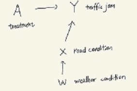

Assumptions for Identification
Consistency:The consistency can be assumed for the model because we the potential outcome of traffic jam in our model is defined as a binary variable and the potential outcome will not change because of treatments and road conditions.
Positivity:We can assume positivity because the probability of each event in real life have to be positive
Exchangeability: One road's realized treatment does not provide any information on what would have happened to another one under various treatment assignments
SWIG
Origin graph:
SWIG:

Identification
By Extended g-formula
- Consistency: As what we assumed before, the potential outcome will not change because of consistency: \( Y(a,w) = Y(a,w,X(w)) \), then we have the same expecation: \(E[Y(a,w)∣X(w)=x]=E[Y(a,w,x)∣X(w)=x] \).
- Markov Compatibility: \( Y(a,w,x) \) is independent with \(X(w)\) because of Markov compatibility in the graph and then we can waive the conditional part.\( E[Y(a,w,x)∣X(w)=x] =E[Y(a,w,x)] \)
- Causal Irrevelence: By causal irrevelence we have: \(Y(a,w,x)=Y(a,x)\) because in this causal model, x gives the full information including w. In reality, that means we just need to consider the road condition because it shows up as a mediator between weather condition and traffic jam. And then we can have expectation: \(E[Y(a,w,x)]=E[Y(a,x)] \)
- Markov Compatibility : For the potential outcome \(Y(a,x)\), it is independent with \(X\) and \(A\) so that we have \(E[Y(a,x)]=E[Y(a,x)∣X=x,A=a]\)
- Consistency: At last, we combine these equalities and we have\(E[Y(a,x)∣X(w)=x]=E[Y(a,x)∣X=x,A=a]\) and by consistency we have \(Y=Y(X,A)\). That is \(E[Y(a,x)∣X(w)=x]=E[Y∣X=x,A=a]\)
Interpretation
- The result we get is that: \( E[Y(a,x)∣X(w)=x]=E[Y∣X=x,A=a] \)
To get the expectation of potential outcome(or we say traffic conditions) under different weather conditions, we just need to observe the given treatment and the corresponding road characteristics. That's a easy thing to forecast for the traffic jam in our real lifes and it is also reasonable
Assumptions for Estimation
Firstly we keep our assumptions for identification
Consistency:The consistency can be assumed for the model because we the potential outcome of traffic jam in our model is defined as a binary variable and the potential outcome will not change because of treatments and road conditions.
Positivity:We can assume positivity because the probability of each event in real life have to be positive
Exchangeability: One road's realized treatment does not provide any information on what would have happened to another one under various treatment assignments
Secondly we give some new assumptions for estimation
the form of \( \mu: \) By Identification: \( E[Y(a,x)∣X(w)=x]=E[Y∣X=x,A=a] \) ,So we don't need to consider the influence from W(weather condition). Then in linear regression, we can assume that \( \mu(X,A; \theta) =\theta'[X,A]^T \)
Estimation
By linear regression
- Clean the data and rebuild the variable X: Firstly we remove the missing data in our data set and then define a new variable \( X = [1,X_{road}]^T \) where \(X_{road} \) stands for road condition given the weather condition.
- Define function \( \mu \): Since we have made an assumptions that \( \mu(X,A; \theta) =\theta'[X,A]^T \), then we can decompose the \( \theta = [\alpha, \beta] \). Then we have \( \mu(X,A; \theta) =\theta'[X,A]^T =\alpha ' X + \beta ' A \). Then what we need to do is find an estimation for \( \theta \)
- Solving the linear systerm :By taking a derivative of mean square error, we know that \( \theta_{estimate} = E_N[[X,A]'[X,A]]^{-1}E_N[Y[X,A]^T] \)
- Find ATE : \( ATE = E[Y(1)-Y(0)] = \mu(X,1; \theta) - \mu(X,0; \theta) = E_N[\theta ' [0,1]^T] =\beta' \)
Impact of Data
The estimation we get is that: \( \theta_{estimate} = E_N[[X,A]^T[X,A]]^{-1}E_N[Y[X,A]^T] \)
The data we need to consider about is that the treatment and the road condition. Since this is a simple algorithm, we don't need to show much about how to use the data. The most important part is the size of dataset. In the algorithm, we have to compute the inverse matrix of \([X,A]' \), so the dataset cannot be too large. However, we need enough samples to show that the validation of the result. As for, a propriate size of dataset is necessary for the model
Some considerations about result
- The choice of \( \mu \): We just set that \( \mu(X,A; \theta) =\theta'[X,A]^T \). However, we have more choices and they give us different answers though they may get closed. For example, we have another choice given in class that: \( \mu(X,A; \theta) =\theta'[X,AX]^T \), and the interaction term will give us some information and the result is \( \beta' E_N[X]\)
- Modelling assumptions for conditional mean: Also, when we use linear regression, we clearly assume the linearity in our model.
- Computational problem of matrix inverse: When the dataset is quite large, it's time-consuming for compute \( \theta \) and estimation
The result we get is that: \( ATE = \beta' \), but we have to face three problems which may influent the model